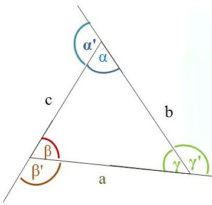

Háromszögek nevezetes vonalai és pontjai
Háromszögek
- Háromszög
- A síknak három egyenes szakasszal határolt része.
Másképp: A síknak három szakaszból álló záródó
töröttvonal által határolt része. Három oldalú sokszög. Átlója nincs.
- 3 csúcs – A, B, C
- 3 oldal – a, b, c
- 3 belső szög – α, β, γ
- 3 külső szög - α', β', γ'

- Összefüggések a háromszög oldalai és szögei között